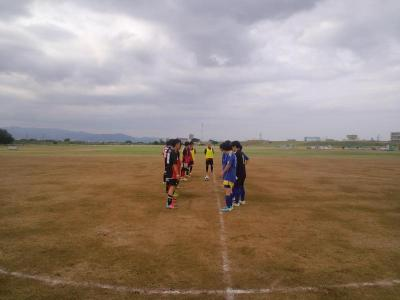

皆さん、本日もお疲れ様でした。
敵チームであるぐっさんへのスルー、【やっちまったなー】でした・・・
でも、ぐっさんの会心ガッツポーツが見れて良かったですｗ
後、まっとんとおーざわさんがキレッキレでしたねー
因みに、こごりんにはミニゲで点数を決めたことを伝えておきます。
【ぐっさんへのパスミスがたまたまゴールしたことは内緒ですが。。。】
今日は太陽も隠れて、活動しやすい感じでしたが湿気があって少しじめじめしてましたね。
今日は合計１４名の参加がありましたが、事実上は１３名？よっしーが早退で、１１時３０過ぎに帰って駐車場に向かって行った時に反対にこっちのほうへまえちゃんが・・・、まあ確かに遅刻になってたけどさあ（笑）、まあ、遅刻への変更時間がびっくりやったからある程度予測してたけど、まあそのまま休んだGさんとは違うってことを訴えたかったんでしょう（笑）
最初はパス練習から初めて、次はわだっちパス回しして、その後はポストシュートして、次に初トライなことをしました。
ポストシュートの応用版みたいな感じかもだけど、後ろからボールを前に居る人に出して、その後ろにデフェンスを一人つけて、前に居る攻めは一度後ろに戻して、その後デフェンスを振り切る動きをして、それに合わせて後ろからループボールとかいろんなボールで前の人に出して、それを受けてシュートって感じでした。デフェンスは多少のプレッシャー程度でしたが、前と後ろの攻めのタイミングや意思疎通が合わないと中々旨くいかなくて、個人的には今までの練習の中でも難しいほうに入るんじゃないかなって思いました。
まあ、これは一番使うのは試合で攻めが後ろに戻した瞬間に相手の裏に走って、それに合わせて出すというシチュエーションになるかなって思います。オフサイドには気を付けないと駄目なんで、ほんと出すタイミング、走るタイミングとかが難しいなって思います。
そんな中でも何度かいいプレーがあったと思います。
その次は両端に二手に分かれて、逆サイドへのパス、そこからコーナーの方へ再度逆サイドへのパス、そこからセンタリングを上げてシュートって感じなことをしました。個人的にクロスをいい感じでごりんさんがヘディングを決めてくれたのが良かったなって思いました。
次は時間繋ぎ程度でしたが、セットプレイの練習をしました。ごりんさん？の鋭いライナー性のクロスをぐっさんが見事にヘディングで押し込んでました。
最後にミニゲをしましたが、今日のミニゲはまっとんがきれっきれでしたね。まっとんルーレットも炸裂するは、ドリもいい感じでしたし、ワンツーとかもいい感じで「まっとん、その動き先週に欲しかったわあ」っていじられてましたが（笑）
あとぐっさんとおーざわさんの対決がおもろかったのと、最後の試合でごりんさんがクールポコ状態で、ぐっさんが豪快にシュートを決めてガッツポーズ。その後ごりんさんが再度やっちまったなあーがあったのがおもろかったです。今日はこごりんにお父さんヘタこいたーって言っといてくださいよ（笑）
まあ、そんな感じで今日も一日楽しく出来ました。これから暑くなりますので、水分は多めに持参してくださいね。
本日、参加された皆さんお疲れ様でした。
一試合目のキーパーでは最初の練習のおかげか、相手のシュートが近くに来たりたまたま足に当たってくれたりで、ラッキーだと思います?
攻められてる時間もチームの皆さんの守りのおかげでプレッシャーをあまり感じず、楽しくできたと思います。
２試合目は途中で喉の渇きに耐えられず、給水に出てしまい、ゴリンさんがパスをくれたのに気付かず、すみませんでした?
チームとしてパスが繋がったり、ゴールまでもっていく場面が多々あり、観ていて面白かったです。
皆さん、お疲れ様でした！

今日は朝は晴れてて暑さが大変でしたが、昼過ぎからは曇りになっていい感じでサッカーできましたね。
本日はご招待して頂いたジュネオFCさん、ありがとうございました。お互いにフェアプレーで楽しい時間を過ごすことが出来ました。今後ともよろしくお願いします。
今日は遅刻早退を含めて１９名の参加がありました。うちはほんと凄いですね。練習でも同じくらいな時もあるし、よっしーみたいに遠方からでも遅刻でも少しだけでもボールを蹴りに来てくれたりすると嬉しいものです。これからもたとえ少しでも一緒にボールを蹴りたいっていうチーム作りを引き続きしていければと思ってます、今後ともご協力お願いしますね。
さて、まあ今日も得点シーンとかを中心に報告を書いて行こうと思いますが、最近若年性都合物忘れが激しいので、抜けてたらどなたか補足頼んます。ていうか今日はテラさんにお願いでもいいんだけどなあ（笑）
１試合目はごろうと愉快な仲間たちと相手チームさんでした。最初の得点は素晴らしい得点でしたよね？？？、きっと自陣のゴール前からボールを持って、ドリブルして最後はキーパーも交わしてゴールという久保嘉晴の伝説を妄想してた結果、相手キーパーが地球を蹴ったゴールキックをまるで獲物を一瞬で捉えるような動きで奪ってごっつあんを決めたごろうさんは流石に抜け目がないっすね。（笑）
２点目は素晴らしかったっすね。わだっちからの縦パスをユウちゃんが受けて、前を向いてゴール前でキーパーを右にかわして、体制が不十分のままシュートを打って左サイドネットに見事に決まりました、美しいシュートでしたね。ユウちゃんはこれが練習試合初得点でしたね。(ごろうさんも？）「僕とごろうの違い」でぜひコメントよろしくです（笑）
まあ、２点入れましたが、結構攻められたりもしてました。そんな中、プレッシャーを跳ね除けてまっとんキーパー大活躍で決定的なシーンを２度も防いでくれました。最後の試合のわだっちの運任せとはちゃいますね（笑）、２試合目もまっとんは前線でいい動きをしてました。まっとんにも「プレッシャーとまっとん」でコメントよろしく（笑）
２試合目は、ハマの番長とその子分チームでしたが、一進一退のいい感じでしたね。僕はスイーパーしてましたが、最初から左右にとフォローで動きまくって、今日はアップ、特にボール蹴ったり事前に出来なかったのが響いて、足が途中で重くなるは、ゴールキックは地球蹴るわで最悪でしたね。ていうか、最後さあ、バック僕一人状態（笑）、特に左サイドのもりちゃんは最初から長友並に駆け上がっていたけど、タイマーは大丈夫やったんかな？
３本目はテラさんタイムでした。２点ともテラさんでしたが、１点目は相手ゴール前での混戦の中でスライディングシュート。２点目はキーパーからのボールをカットしてキーパーと１対１を華麗に交わして、無人のゴールへと・・・。決まれなかったけど、素晴らしいスルーパスをわっちへとか、テラさん尽くしでしたね。「深北緑地の時よりコンディションは良くないとか」ほざいてましたが（笑）
応援歌を作りますか？テラテラテーラテーラ、ボールをもぉって～、テラテラテーラテーラ、ゴールをきめーるー。題名は「テラテラ」で（笑）、ホンマは牛の歌やけど。
スガちゃんを抜いて得点ランキングトップに躍り出ましたね。今日の感想をお待ちしてます。僕的には小梅太夫を歌いたい（笑）
僕は助っ人でバックしてたけど、センターサークルくらいから大ホームランで終了（涙）
後は見学と言いながらぐっさんが頑張って動いてましたね、いつも以上に寝ぐせ？全開でしたが（笑）
４試合目は飛ばしましょう、もう全てはタカさんのオニパスのせい（笑）。ほんま僕はボロボロで放心状態でほかの内容覚えてないです。よっしーがコーナーの時反対サイドでなんかちょっと可愛らしい恰好でヘディングしてたのは覚えてるよ。試合終わって、へこんでたらユウちゃんがすかさず「まっさん、結構ボール来てたで～」って傷口に塩を塗るような発言、ドSは容赦ないっすね。いいもん、自称ベストゴール賞だから（笑）、でも絶対にリベンジしたる。覚えとけよ～ごりんさん（笑）（ごりんさんとハマさんからも意地悪なパスあったし・・・）
最後の試合は希望者でしましたが、僕は悔悟のためお休み。でもみんな元気に頑張っててパスもいい感じで結構繋がってたけど、反対にまえちゃんが油断して取られてあきらめて、キーパーしてたわだっちと１対１、わだっちもあきらめ、唯一あきらめなかったのはポスト（笑）、ポストのおかげで今日は全体的に無失点でした（笑）
最後の試合は少し前のほうでプレーしてたけいちゃんが頑張ってたと思います。正式入部して初参加が今日の試合だっけ？１本目は酸素不足のようなヘロヘロやったのに、よう頑張ったと思います。今日のために午前中にユニを取りに行って良かったです。けいちゃんも良かったら感想よろしくです。
まあ、そんな感じでした。
これから暑くなってきます、試合でも練習でも体力が落ちるとケガに繋がりますので、皆さん水分補給をしっかり取って、無理をしないようにしてくださいね。
本日参加された皆さん、お疲れ様でした。
もりちゃんがチーム内掲示板に画像をＵＰしてくれているので、また皆さん見てくださいね。なんかハマさんが多いような・・・、やっぱり裏番長はおさえとかないと駄目ですもんね（笑）
もりちゃん、写真のupありがとうございました?やっぱり写真は良いですね?いつも試合を見るばっかりで、写真の事が頭に無いだけに、ありがたいです(笑)
グラウンド状態が劣悪でしたが…やっぱり試合は楽しかったですね?
ワダッチからのナイスパスから、初ゴールを決めれて良かったです?
ワダッチありがとうございました☆
チームのみんなの頑張りで勝てましたね！
ありがとうございます?
対戦相手に若い子がいなかったですが、リベンジ成功ですね。
チームが成長してるのが実感出来ます?
何より最近の試合は無失点が続いてるのが良い傾向ですね♪
本日はお疲れ様でした。
本日参加のみなさん、お疲れ様でした。第２掲示板に試合の写真を数枚、貼り付けておきます。
全員分とれなかったのが残念ですが、結構臨場感のある写真もありますので一度見てください。
数日前までは降水確率６０％、確かに夜中ちょびっと降ったみたいやけど、ほんま天気予報どないなってまんねん。だから、前ちゃんが８時くらいに来るんやで（笑）
今日は全員で１１名の参加がありました。まっとんが１０時過ぎに早退でしたので、最初から５対５でミニゲをしました。まっとんの早退理由が荷物を送るのに梱包とか午前中にしないとあかんからでしたが、「そんなん朝早く起きてすればいいのに」ってごろうさんが言ったら「お前がゆうな」って周囲からツッコミの嵐（笑）
今日はミニゲだけでしたが、やっぱりいきなり始めると体が重いですね。何名かは昨日の個人的なフットサルに参加してたみたいですが、ギリギリで欠席にしたYさん、ブラックごろう２号に認定します（笑）
今日はまあ、最初はユウちゃんが空回りしてて、途中からはまえちゃんとごろうさんのやり取りがおもろかったっす。でもいいパス回しもあって浮いたボールをごろうさんが足をあげてヒールリフトっぽい感じでかっちょいいゴールもありましたしね。
今日はごろうさんが目立ってましたね。ボールが外に出て取りに行くのも多かったし、そのうち１回、誰かが「ごろうさん、ごめーん」って言ったのをなぜか、はまさんが「大丈夫」（笑）
僕もバウンドボールトラップしようとしてたから、引いて見てたら近くまで来て、両手で邪魔者扱いで押されて、転がったボールになぜかユウちゃんが突っ込んで来て、ボールの上に乗って転倒（笑）
まっとんの早退の代わりに急遽参加してくれたよっしーは最後は締めてくれたけど、途中まではまあいつも通り（笑）
そんな感じで延々とミニゲで今日は終わりました。
本日参加された皆さん、特にかき姉さん、お疲れ様でした。
今日は前日まで雨とかになってて、朝からまた判断面倒だなって思ってたら、朝起きたら晴れてるし、ほんとyahooにはよく騙されますね。
問題なく開催となり体験参加の方も含めて１４名の参加がありました。
今日はわだっち下ネ神が練習メニューの提案をしてくれました。今日はかきさんの上をいってたなあ（笑）
まずはパス練習して、それからうーん鳥かごのパワーアップバージョンみたいな感じで四角形で外が３人、その３人はコート端しか動けなくて、一つのラインに２人も駄目で、その分中に味方が一人居て、その人にパスはＯＫで中のデフェンスが２名ていう感じ？あーあ良くわがんね（笑）、もう一つはこれも四角形を作ってパス＆ゴーの変型バージョン、ボール持って次のコーナーに居る人にパス、その人から再度パスをもらって、パスを返した人は次のコーナーの方に動いてパスをもらう、そこから次のコーナーに居る人にパス、また折り返してという感じでした。
詳しくはわだっち監督が猿でもわかる解説をしてくれると思います（笑）
シュート練習も２種類しました。ポストシュートでは無くて、ポストに位置に一人立って、後ろからそのポストのところに強めのボール、それをトラップして、反転してコーンをかわしてシュートという感じでした。試合とかで縦パスを受けてからの反転してプレイみたいなかんじですかね。それともう一つは左右から真横にボールを出して、それをダイレクトや場合によってはトラップしてシュートでした。特に最初の方は結構、受けた後にいいシュートが決まっていることが多かったですね。
次にセンタリングシュートでした。左右にセンタリングを上げる人が居て、中央からそこにパスして、サイドは真ん中に合わせた形でセンタリング、それをシュートって感じでしました。
まえちゃんからのセンタリングにごろうさんがヘディング？惜しい感じでよろけていたのをまえちゃんが大爆笑、でも天罰でその後にセンタリングあげる時にまえちゃんこけてたし（笑）
んで、次はミニゲに入りました。今日はハマさんがきれっきれでテラさんもやられてましたね、でもハマさん以上にユウちゃんがいいプレーが多かったっすね。テラさんの無尽蔵な体力には脱帽です。
あとはいろんなプレーがいろいろあって楽しかったですが、ヒロさんがいい場面で突然の転倒、「ファールやあ」とか言ってましたけど（笑）
転倒といえば最後はやっぱりもりちゃん、見事に「ボテ」が炸裂しました（笑）
まあ、そんな感じでの一日でした。練習でこんなことしてみたいとかあれば、わだっち以外にも遠慮なく提案してくださいね。あまりにも基礎練がしないですけど（笑）
本日、参加された皆さんお疲れ様でした。
今日はいいお天気でしたが、涼しい風にも恵まれて活動しやすかったですね。
なんだかんだで最大１９名の参加がありました。なんかBGと愉快な仲間たちが何名かで朝方？まで飲みしてたらしいですけど、その中心人物がドタキャンって・・・、ドタ参もいましたが、どちらの場合も一報お願いしますね。まあ、BGさんは今日はくしゃみだらけだったでしょう（笑）
さて、今日は最初は２人組でパスして、その後２チームに分けて鳥かごし（今日は久々にボール一個で）、次にワンツー的な感じでポストシュートをしました。これは左右交互にしましたが、ポストは１人だったのでポスト役が大変やったと思います。
次は、中央から少しドリしてサイドにボールを入れて、サイドがその動きに合わせてドリしたり、その場所からクロスを上げるような感じでしました。結構、ええ感じでシュート決まってた人もいましたね。僕は頑張ってヘディングシュート狙ったけど、クリアだったし、あーあ、ヘディングスケさんとかもりちゃんみたいに上手になりたいなあ。
その次はいつもなら攻めと守りですが、今日は３対３をしました。実際の試合でも３対３くらいになることも多いですが、結構バックがマークに付くのが難しかったんじゃないでしょうか？常にマークの相手を見ていないと、いつのまにか攻めが違う場所にいることが多いですし、守りのスイッチ的なことも求められてきますよね。
最後はいつも通りちょっと長めにミニゲをしました。最大で１０対９でしたがそんなに狭く感じず、楽しく出来ましたね。
ミニゲは今日は特にまえちゃんとテラさんの攻防がおもろかったですね。なぜかかきさんがテラさんに説教（笑）。あとよっしーの意味不明な行動（笑）。まあ、テラさんもよっしーもグランドが滑りやすいのもあったけど結構こけてましたね。
でもこけるといえば、今日のダントツの一位は僕ですね。ほんとボール取りに行って石の橋の上で滑った時は手首が折れたかと思うくらいでした。そんな状態に「いつもしゃべりで滑ってるから」って毒を吐いたひでえ人がいましたね。まあ誰かは伏せときましょうかね～９９番さん。
まあ、ほんと足を痛めたまましていたので、かばってしまうのもあってバランスが崩れましたね。怪我してもボール蹴りたい気持ちが勝っちゃいますね。テラさんやかきさん、そしてヒロさんとかも無理しないようにね。
全般的に愉快な仲間たちがちょっと動きが鈍かったかな？特にルフィー２号のコスイＳちゃんはまだ半分酔っ払って酔拳ドリブルしてたし（笑）
本日参加された皆さん、お疲れ様でした。
昨日は、みなさんお疲れ様でした。
まず、シュートを決めたまっさん、テラさんナイシューでした。
試合の方は、みなさん個々に見せ場があり楽しめたのではないでしょうか?
随所に良いプレーが見られましたし、相手のレベルもちょうど良いくらいで
とても良い一日になりました。試合を重ねるごとにチームの連携も日々良くなって
きてるので今後も楽しみながらプレーしていきましょう。
まっさんいつも色々ご苦労さんです。